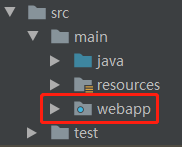
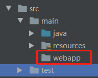
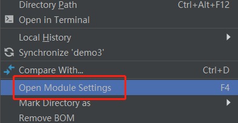
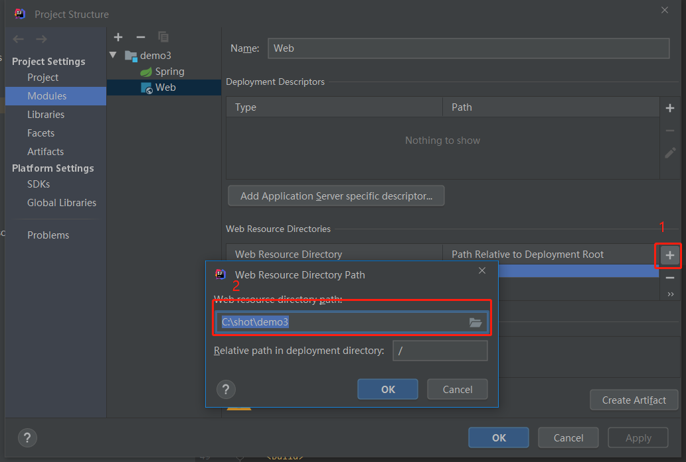
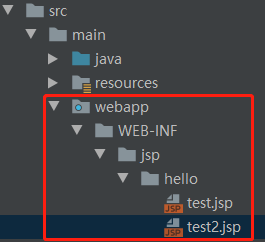

最近在看杨开振的《深入浅出springboot2.x》这本书，看到SpringMVC这两章时，就想建个demo试试，他用的是jsp作模板，这个东西现在基本是被淘汰了的，不过学习嘛，用这个来了解一下spring的工作流程还是可以的，结果在建项目时遇到了点坑，这里记录下
问题1：springboot集成jsp需要哪些package？
答：
1 | <dependency> |
测试下来，只要上面两个package即可，测试了多个springboot多个版本（2.0.0-2.3.6），只要加了上面两个package都是可以正常解析jsp模板的
注意：package引入时不要加scope->provided选项，否则可能会因为idea设置导致无法使用问题，如果你遇到了这个问题，也可以参考这里（传送门）尝试解决
问题2：怎么让让jsp文件目录融入到项目中？
答：用spring initializer的模板初始化的项目，是没有传统的webapp文件夹的，即使你勾选了web模块，项目初始目录应该是没有下面的webapp文件夹的

解决办法就是手动创建一个Directory😂，但是创建完会发现文件夹图标与上面图片中不一样，没有那个小圆点图标

这是因为这时项目还没有将这个文件夹认为是存放web资源文件的地方，这时可以右键项目名称，在菜单中找到下面的Open Module Settings选项

在弹出的窗口中（Modules->项目名称->Web）设置Web Resource Directory，如下图

点击1处的加号，在弹出框中2那里将目录设置成刚才添加的webapp文件夹，确定后，就能看到webapp文件夹变成有小圆点图标的样子了，并且此时右键webapp文件夹新建文件时会有JSP/JSPX选项
注意，此时只是在idea中设置好了，但是sprinMVC并不知道去哪里找jsp模板，还要在application.properties文件中添加下面两行代码才行
1 | spring.mvc.view.prefix=/WEB-INF/jsp/ |
问题3：怎么设置路由？怎么返回页面？
答：springMVC中已经为我们做了很多东西，并不需要我们写太多东西，可以建个HelloController文件，加入代码
1 | @Controller |
然后在webapp下创建jsp文件，目录如下

上面设置了两个路由，一个直接返回String，一个返回的是一个ModelAndView，都可以在前端正常渲染页面，之所以这样是springMVC内部做了很多处理，详细的不在这里说了，这里只是记录环境搭建。
gitee测试代码